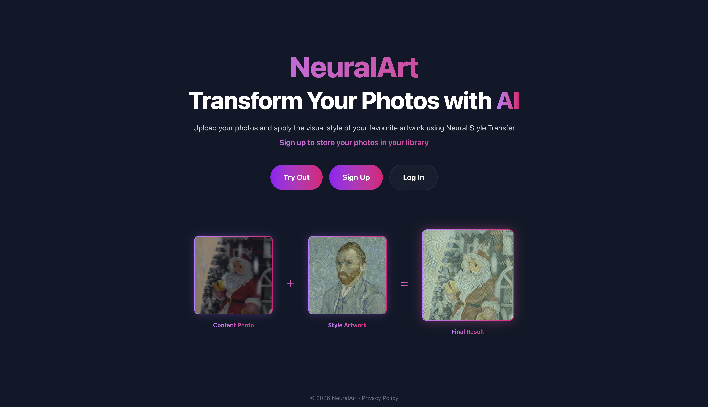
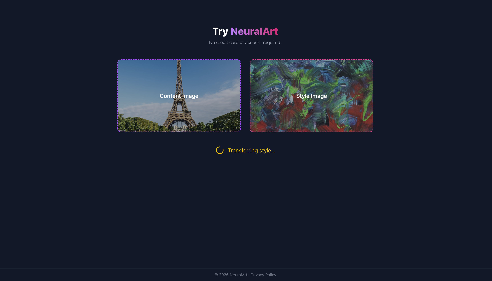
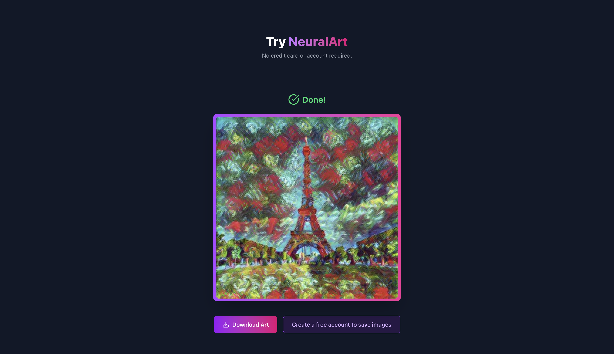
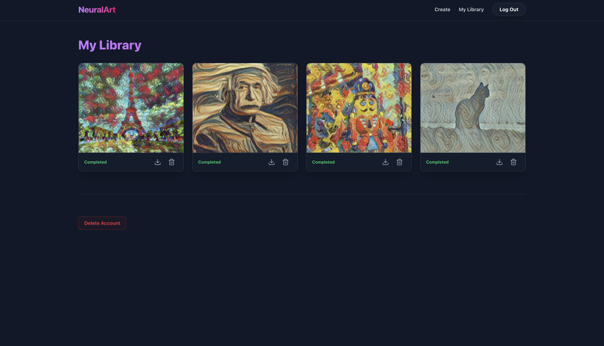

NeuralArt
A photo gallery app where users can apply artistic styles to their photographs using neural style transfer and store the results in their personal library.
OVERVIEW
NeuralArt lets users upload photographs and apply the visual style of famous artworks or custom style images to them using neural style transfer. The results are stored in a personal library that users can manage and revisit. Users who don't have an account can generate images without the access to a library. The photos are stored in S3 compatible DigitalOcean Spaces and shown via presigned URLs to ensure user privacy.
Neural Art uses Google Magenta for Neural Style Transfer. It allows the service to apply Neural Style Transfer much faster than Gatys method, while also let the app be deployed on a budget VPS.
ARCHITECTURE
Async Processing with Celery — Neural Style Transfer is computationally expensive. Tasks are offloaded to Celery workers so Neural Style Transfer runs asynchronously without blocking the API response. Redis acts as the Celery message broker.
FastAPI Backend — Handles user authentication, image uploads, task dispatch, and library management. Authentication is handled via HTTP only cookies and JWT. File uploads are handled via boto3 library for S3.
Next.js Frontend — User interface is implemented with Next.js App Router.
PostgreSQL — Stores user accounts, image metadata (DigitalOcean space paths, completion status etc.), and library relationships.
Docker and Deployment — The whole app is deployed on a DigitalOcean VPS using Docker and Docker Compose. DNS is managed via Cloudflare. NGINX is used as a reverse proxy.



